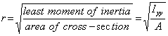
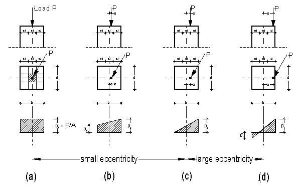

|
Performance of columns
The slenderness of a column depends on the height or length, the shape and size of its cross-section and how the ends are supported (pinned or fixed or a combination of both). The effective length is the actual length of a column multiplied by a factor related to the end fixing of the column. These factors are shown in Figure 2.
The radius of gyration is calculated by taking the square root from the moment of inertia (usually Iyy) of the section divided by its area.  For rectangular section the slenderness ratio is taken as the effective length divided by the least width because of the relationship between I and A. Steel columns are usually not of solid rectangular cross-section and therefore the least radius of gyration must be used instead of the least width. Material The load carrying capacity also depends on the material of which the columns are made. Concrete columns are stronger than timber post and steel is superior to concrete. Structural steel has a strength of 300 MPa, the strength of concrete range between 15 MPa and 100 MPa and the strength of timber varies between the species. Structural timber is usually stress graded and the grade according to the timber framing code ranges from F5 (5 MPa) to F34 (34 MPa). Eccentricity The load should be directly axial applied to columns to avoid bending. The stress in the column can then be easily calculated by using the well known formula However, often the load is not axial applied but off centre (eccentric) and bending stress is induced as well as a direct compressive stress. The bending stress must then be added to the direct stress to make up the combined stress If the load is not axially applied then the moment times the eccentricity (P × e) must be added to the compressive stress as shown in the example below. If the load is not applied on one of the x-x or y-y axis then all four corner of the column may have different magnitude of stress. Note how the form of the stress prism changes from an even distribution to a very uneven distribution. The case at (a)t illustrates how the axial load creates a compressive stress which is evenly distributed across the column's section. The load on each column to the right has an increasing eccentricity. As the load moves away from the centroidal axis, it introduces a bending moment which the column's cross-section must also resist. One side of the column receives more compression than the other. As long as the applied load remains within the core (middle third) of the section, as shown in (b), the column cross-section will only have compressive stresses. In (c) P is exactly acting on the middle third border. the stress on the opposite face of the pier is zero. However, as soon as the P moves out of the core tension stresses are introduced as can be seen in (d). The magnitude of the bending moment that the section must also resist increases as the eccentricity increases. Close this page if not needed
|